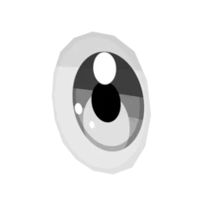

マテリアル：トーンと影、目と口
「Manga Tone Shader を適用」で、選んだオブジェクトに漫画用のシェーダーが入ります。網点やカケアミのトーン、くっきりした影、影の中の模様までをサイドバーから調整できます。目と口は専用のシェーダーで、顔の上に描き足します。
Manga Tone Shader Apply Manga Tone Shader

キー・フィル・バックの3灯それぞれに、トーンの模様と色を割り当てる作りです。トーン素材はアセットブラウザからドラッグ＆ドロップで入れ替えられます。

同梱のスクリーントーン素材（Manga Tone Flat / Shaded）。全種類の一覧は Manga Tone Flat と Manga Tone Shaded にあります。

| 見出し | 項目 | 効果 |
|---|---|---|
| 基本色 | Base / Key / Fill / Back Tone | 地の色と、3灯それぞれの面のトーン |
| 法線 | ノーマルマップ、筆のタッチ | 凹凸と、明暗の境目を筆跡のように揺らす |
| 影 | シャドウ、サブ輪郭、AO | 落ち影、影の縁の線、くぼみの暗がり |
| ハイライト | 光沢、異方性、リムライト | 髪の天使の輪、金属のすじ、逆光のふち |
| その他 | マット、水彩、色（色ゆらぎ・紙）、透過 | 紙の質感や色ムラ、PNG の切り抜き |
数値を変えたときの見た目は マテリアル仕様 › Manga Tone Shader にまとめています。
キー・フィル・バックのトーン Key / Fill / Back Tone
キー・フィル・バックはそれぞれ枠で分かれていて、上から作業する順に並んでいます。
| 順 | 項目 | 内容 |
|---|---|---|
| 1 | トーンのオン・オフ | その段を使うかどうか。オフにすると下の項目は隠れる |
| 2 | ライトのオフセット | 明暗の境目をずらし、その段の面を広げる・狭める |
| 3 | 色 | その段の地の色 |
| 4 | トーンのマテリアル | トーン素材のマテリアル。アセットブラウザからドラッグ＆ドロップでも入る |
| 5 | 描画モード・不透明度 | トーンの重ね方（通常・乗算・スクリーン・オーバーレイ・加算・減算・比較（暗）・比較（明））と濃さ。不透明度はキーフレームを打てる |
トーンのグラデーション
マテリアルの色に使うトーンにもグラデを付けられます。オブジェクトを正面から見て、下から上に濃さが変わります。
絵画風・ノーマル・透過 Painterly Look · Normal Map · Transparency NEW
絵画風 絵の具の面で塗る
面を筆の塗りのように分割して、色と明るさにムラを付けます。プリセットは標準・油彩・厚塗り・水彩。水彩では境目がにじみ、縁に絵の具がたまります。
ノーマル ノーマルマップ / 筆タッチを描く
ノーマルマップは影・光沢・異方性・リムすべてに効きます（DirectX 形式は反転）。無地の画像を作り、ノーマルパレットで筆タッチを手描きすることもできます。
透過 PNG で切り抜き ＋ アルファの縁取り
葉や髪先の板ポリを、PNG のアルファでくっきり／ソフトに切り抜き。切り抜いた形に沿った輪郭線は、輪郭線パネルの「アルファ（透過の形）」で付けます。
絵画風のプリセット Painterly Presets
プリセットを選んだときに入る値です。油彩・厚塗りは Manga Tone Shader の「色（色ゆらぎ・紙）」も一緒にオンにし、水彩は Manga Tone Shader の「水彩」（にじみ・縁のたまり）をオンにします。— の項目は変わりません。
| 項目 | 標準 | 油彩 | 厚塗り | 水彩 | |
|---|---|---|---|---|---|
| 筆のタッチ | 強さ Strength |
1 | 1 | 0.6 | 1 |
タッチの細かさ Stroke Size |
4.3 | 3 | 3 | 2.5 | |
やわらかさ Softness |
0 | 0 | 0 | 0.7 | |
ゆがみ Distortion |
0.15 | 0.35 | 0.1 | 0.45 | |
ゆがみの細かさ Distortion Scale |
3.5 | 3.5 | 3.5 | 3.5 | |
細かいゆがみ Detail Distortion |
0.08 | 0.12 | 0.03 | 0.05 | |
細かいゆがみのスケール Detail Scale |
25.7 | 25.7 | 25.7 | 25.7 | |
粒子 Grain |
0.075 | 0.1 | 0.02 | 0.02 | |
ざらつきの細かさ Grain Scale |
82.1 | 82.1 | 82.1 | 82.1 | |
テクスチャのずれ Texture Displacement |
0 | 0.25 | 0.05 | 0.4 | |
| 筆跡 | 筆の置き跡 Brush Dabs |
0 | 0 | 1 | 0 |
置き跡の細かさ Dab Size |
— | — | 2 | — | |
線の長さ Stroke Length |
— | — | 2.5 | — | |
毛筋 Streaks |
— | — | 0.35 | — | |
毛筋の細かさ Streak Scale |
— | — | 15 | — | |
明暗の境目の崩し Edge Break |
— | — | 0.7 | — | |
| 一緒に変わる項目 （Manga Tone Shader） |
色（色ゆらぎ・紙） Paint Finish |
— | オン | オン | — |
色ゆらぎ Color Variation |
— | 0.06 | 0.06 | — | |
明るさのゆらぎ Value Variation |
— | 0.22 | 0.22 | — | |
紙 Paper |
— | 0.1 | 0.1 | — | |
水彩 Watercolor |
オフ | オフ | オフ | オン |
目 Parallax Eye · Manga Toon Eye NEW


眼球の球面に沿って虹彩が奥に見える視差のある目です。左右別々のオブジェクトで、視線ターゲットにドライバーで追従します（Python の自動実行は不要）。
 アニメ
アニメ

漫画（白黒・インク線）- 目を髪の上に描く：カメラから見て目の前にある髪（とその輪郭線）だけを透かします
- 視線ターゲット / カメラを見る：頭のボーンに付いたターゲットで視線を動かす
- 目のパッド：ドラッグで視線を動かせる操作パッド。リグ連携にも対応
- 虹彩・瞳孔・まぶたの影・ハイライトは、プロパティエディターのマテリアルタブで調整
表情の作り方
専用の切り替えボタンはなく、次の3つを組み合わせて表情を作ります。どれもキーフレームを打てるので、コマやカットごとに切り替えられます。
- 瞳孔の形：丸・多角形・星・ハートから選びます（瞳孔の形）
- エフェクト：ハートやキラキラなどの PNG を目の上に重ねます（エフェクト）
- 目の表示：目／目＋エフェクト／白目＋エフェクト／隠すを切り替えます。補間なしのキーフレームが入り、パッと切り替わります（目の表示）

リグ連携（目） Link to Rig · Eyes


視線（と、エフェクトの位置）を、リグのコントローラーのボーンか、エンプティで動かせます。ボーン／エンプティが四角の中を上下左右に動くと、目もその分動きます。
- Rigify のように左右の目のボーン（eye.L / eye.R）があるリグは、リンクしたときに片目ずつも自動でつながり、片目だけを動かせます（両目共通の視線に足される）
- 「エフェクトの位置」（目の上に重ねる画像）にも、同じ形のリグ連携があります
- 視線ターゲットを使っているときは、ターゲットで動きます（パッドは無効）
| 項目 | 内容 |
|---|---|
| リグ（アーマチュア または エンプティ） | コントローラーのボーンを持つアーマチュア、またはコントローラーにするエンプティ |
| ボーン | アーマチュアのときに、視線を動かすボーンを選ぶ |
| 範囲（0 = 自動） | ボーン／エンプティが中心から端まで動く距離。0 = ボーンの長さ（エンプティの大きさ）の半分 |
| リンク | 連携を始める。連携中はパッドが消え、リグだけで動く。× で解除するとパッドに戻る |
| キャリブレーション（今の位置を中心に） | エンプティのとき、今の位置を視線の中心にする |
| コントローラーを目の位置に合わせる | 連携したボーン（Rigify の eyes / eye.L / eye.R など）を目の板のすぐ前に移す |
数値を変えたときの見た目は マテリアル仕様 › Manga Toon Eye にあります。
口 Manga Mouth · Manga Toon Mouth NEW

顔の面にくっつく板ポリが、そのまま口の形になるアニメ口です。口の中は、奥行きのある喉・舌・歯として見せます。
口の形の作り方
形のプリセットはなく、口の板（メッシュ）の形がそのまま口の形になります。
- 口のオブジェクトを選んで編集モードに入り、頂点を動かして形を作ります（UV の四角の中が口になります）
- 開け閉めは、口の板そのものを変形させて作ります（編集モード・シェイプキー・アーマチュアなど）。歯と舌は下の「リグ連携」でボーンについてきます
- 口の中の空洞（奥行き・幅・高さ）と、輪郭の角はサイドバーの「口の形」で調整します
| 項目 | 内容 |
|---|---|
| 形 | 口の板のメッシュそのもの。編集モードで頂点を動かす |
| 口の中 | ジオメトリで足す／外す。空洞の奥行き・幅・高さ |
| 歯 | 歯のスタイル（一枚板・四角・丸・ギザ）、上下それぞれの高さ・幅・位置・回転（前後・左右・正面） |
| 配置 | 顔の面にくっつける、顔をマスクで透かす |
| リグ連携 | 歯と舌をボーンで動かす（下の「リグ連携（口の中）」） |
リグ連携（口の中） Rig Link · Mouth Inside


口の中の歯と舌をリグのボーン（またはオブジェクト）につなぎ、あごや舌のボーンの動きについてこさせます。
ボーンの動きは「今の姿勢を基準にする」を押したときのポーズからの差で伝わります。リグに付けたら、口を閉じた普通の姿勢で一度押してください。
| 項目 | 内容 |
|---|---|
| 上の歯 ／ 下の歯 ／ 舌 | それぞれを動かすオブジェクト。アーマチュアを選ぶと、下の欄でボーンを選べる |
| 親 | 動きを測る元（頭など）。空なら自動（同じアーマチュアの head などのボーン → エンプティの親 → 口の親） |
| リグの効き | ボーンの動きをどれだけ伝えるか（1 = 同じだけ） |
| 口の形に合わせる | 口の板の形が変わる（開く・閉じるなど）と、歯と舌も一緒に動く。オフ = 基準の形の位置のまま |
| 今の姿勢を基準にする | 今のポーズと今の口の形を、歯と舌の基準の位置にする |
| × | リグとの連携をやめる |
数値を変えたときの見た目は マテリアル仕様 › Manga Toon Mouth にあります。